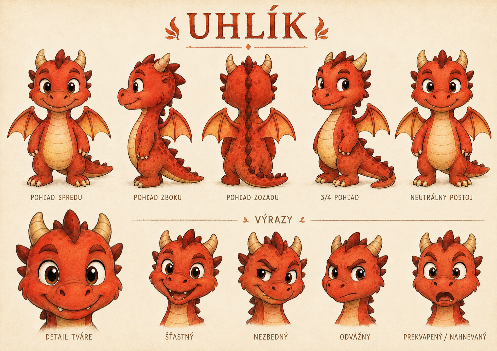
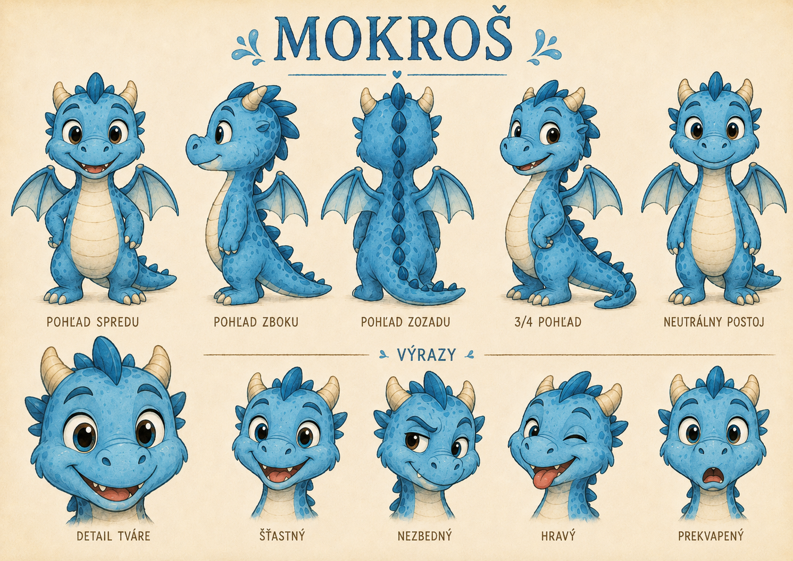
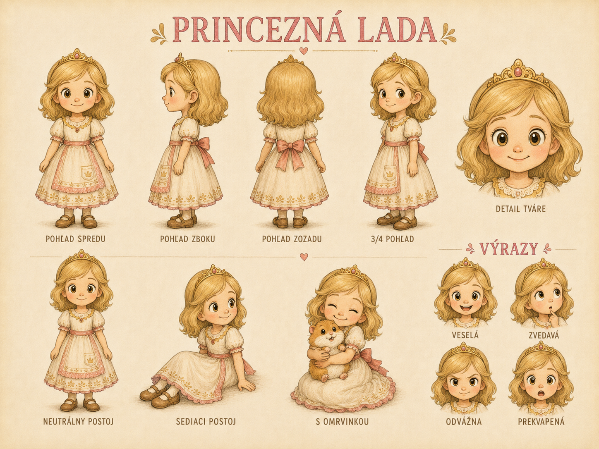

Rozprávky
Osem príbehov s dĺžkou čítania, čistým rozložením a ďalšou kapitolou na konci.
8 kapitolvečer
Rozprávky na večerné čítanie
Štyri malé dráčiky robia detské hlúposti s dračími následkami. Pre deti dobrodružstvo, pre rodičov pokojná cesta rovno k rozprávke.

Rýchly vstup
Stránka drží krátke rozhodovanie: čítať, pozrieť postavy alebo sa zorientovať v kráľovstve.

Osem príbehov s dĺžkou čítania, čistým rozložením a ďalšou kapitolou na konci.

Postavy bez zahltenia: kto je kto, čo vie a v ktorých rozprávkach sa objaví.

Krátko o tóne, bezpečí a tom, prečo je svet vtipný, ale nie hlučný.